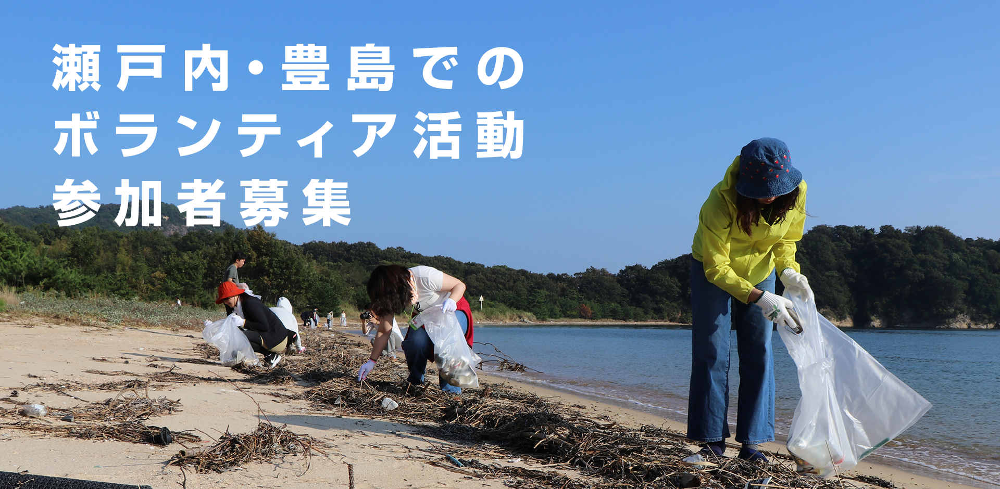
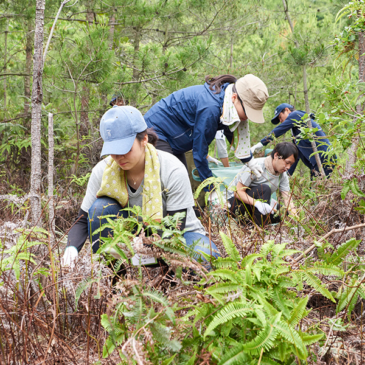
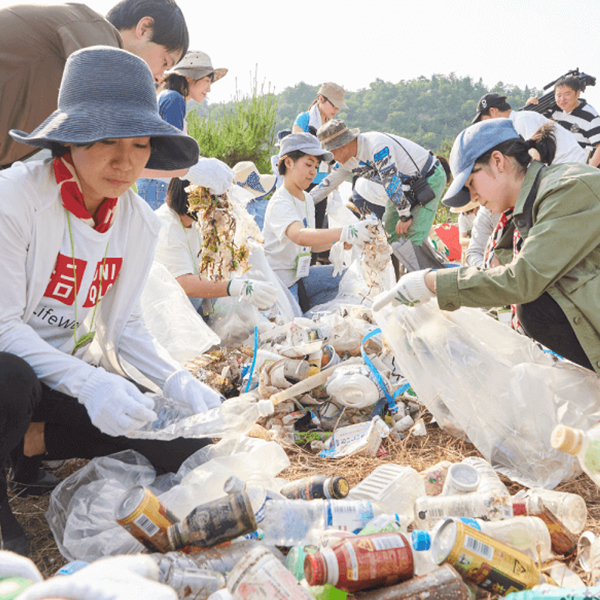
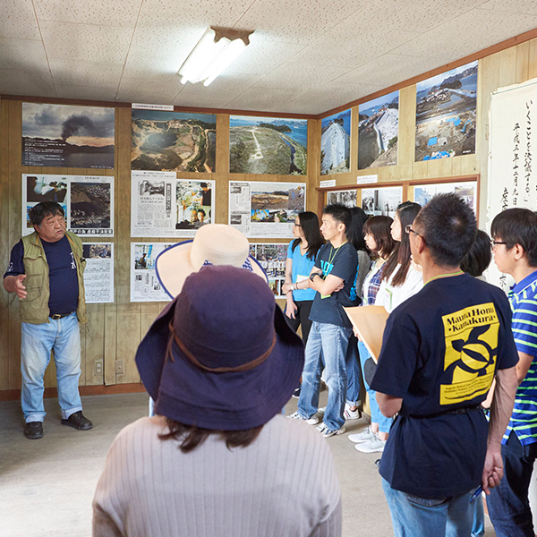
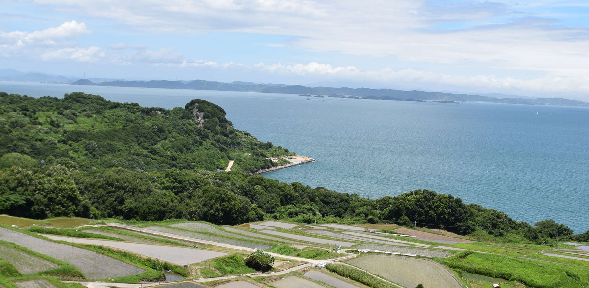
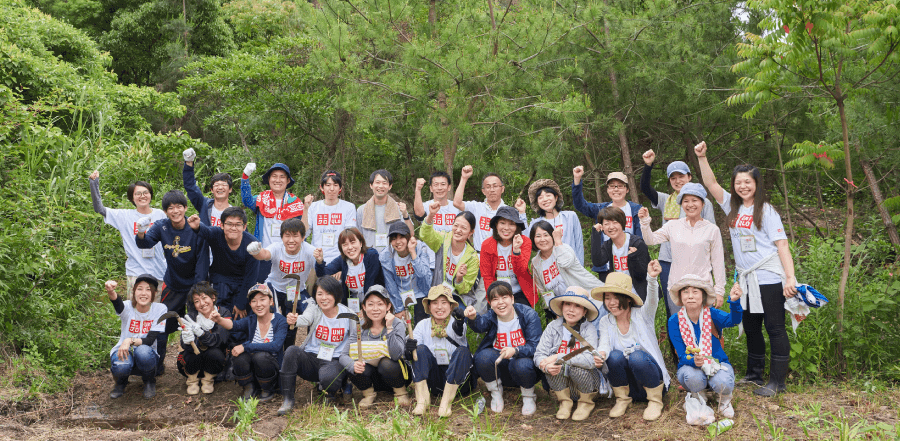

たくさんのご応募ありがとうございました。
2019年度の募集は終了いたしました。
瀬戸内オリーブ基金の取り組み
ユニクロ・ジーユーは、自然豊かな日本のふるさとを次世代につなぐことを大切にしたいと考えています。日本国内のユニクロ・ジーユーでは豊島や瀬戸内海の美しい自然を守るために設立した「瀬戸内オリーブ基金」に賛同し、募金活動や従業員による環境整備のボランティアを通じて参加しています。現在は、有害産業廃棄物の不法投棄事件で破壊されてしまった豊島の国立公園をふさわしい姿へ原状回復し、豊かな島と海を次の世代へ引き継ぐことを目的とする「豊島・ゆたかなふるさとプロジェクト」にユニクロ・ジーユー従業員のボランティアが年間約120人参加。瀬戸内オリーブ基金、地元の方、専門家とも連携しながら、海岸風景の復元、痩せてしまった土地の再生など、さまざまな取り組みを行っています。
プログラム・スケジュール
- 10月15日（火）
- 高松港集合
- 高松港出発
- 豊島家浦到着
- 豊島バスツアー・地域説明
- 産廃不法投棄現場見学
- 植樹活動・フィールドワーク
- サスティナビリティ研修
- 懇親会・バーベキュー
- 各民泊へ移動
- 10月16日（水）
- 浜お大師さん前集合
- 海岸清掃
- 移動
- 唐櫃にて昼食、参加アンケート記入
- 唐櫃にて解散
- 豊島家浦港出発
- 高松港到着
※本スケジュールは現時点の予定であり、天候等その他の都合により変更となる可能性がございます。
予めご了承ください。
予めご了承ください。
- 
- 
- 
Q&A
- 応募資格は？
- 満20歳以上の日本国内居住の方で、ボランティア活動に参加できる方が対象となります。
- 豊島では何をするの？
- 破壊された国立公園に元の豊かな自然を取り戻すための環境保全を目的とした軽作業や、豊島事件の教訓を伝える環境学習、持続可能な社会を実現するためのサステナビリティ研修などを2日間に渡り実施いたします。
- 参加メンバーは？
- 全国からの応募者20名とユニクロ店舗からの応募者が参加いたします。また、瀬戸内オリーブ基金のスタッフ、現地ボランティアメンバーの方々がサポートいたします。
- どんな格好で行けば良い？
- 動きやすく、汚れても良い長袖シャツと長ズボンでお越しください。また、帽子、軍手、マスク、タオルをご持参ください。長靴やスコップ、カマなどの軽作業に必要な特別な装備は当日お貸し出しいたします。
※ご希望の方には、ユニクロオリジナルTシャツを当日600円で販売いたします。 - 当選結果はどのように連絡されるの？
- 応募フォームで記入されたメールアドレス宛に、8/20(火)～8/30(金)の間で抽選結果をご連絡いたします。
※ec-system@ml.store.uniqlo.comよりメールをお送りいたします。事前に受信設定をご確認ください。 - 当選したが、他の人に当選の権利を譲ってもいいの？
- 大変申し訳ございませんが、ご本人様名義にてチケット手配や保険加入をいたしますので、応募時に申込みいただいたご本人様以外ご参加できません。
- 豊島までの航空券／特急・新幹線チケットは自分で手配するの？
- ユニクロで手配いたします。
高松港までの航空券／特急・新幹線等のチケットについては、指定の旅行代理店様を通じて、お客様へ送付します。高松港からは、定刻往復チャーター便に乗船いただきます。 - 宿泊は自分で手配するの？
- 宿泊の手配は不要です。参加される皆様で数グループに分かれて、豊島の民泊に宿泊します。
ホテル・旅館のような一般の宿泊施設ではありませんので、タオル・歯ブラシ等をご持参いただく必要があります。 - 費用はいくらかかるの？
-
豊島までの移動費・滞在費・設備利用料のうち、お一人様あたり1万円をご自身で負担いただきます。残りの費用に関しては全てユニクロで負担いたします。（下記※１～３を除く）
※１参加者の最寄り駅・空港～高松駅～豊島（家浦港）までの移動費用はユニクロが負担いたします。ただし、ご自宅～最寄り駅・空港までの移動費用のみご自身で負担いただきます。
※２お土産代等の諸費用、その他の個人的費用は、全て参加者ご自身のご負担となります。
※３参加目的以外の前泊・後泊費用は原則参加者のご負担となります。
※４キャンセルが発生した場合：予めいただいた1万円はご返金いたしかねます。また、移動チケット手配後のキャンセルについて、キャンセル費用が発生した場合は参加者のご負担となります。
応募について
たくさんのご応募ありがとうございました。
2019年度の募集は終了いたしました。
瀬戸内オリーブ基金について
瀬戸内オリーブ基金とは、「豊島事件」（1980年代に起こった有害産業廃棄物の不法投棄事件）をきっかけに、建築家の安藤忠雄氏と、豊島事件弁護団長の中坊公平氏が呼びかけ人となって設立されたNPO法人です。